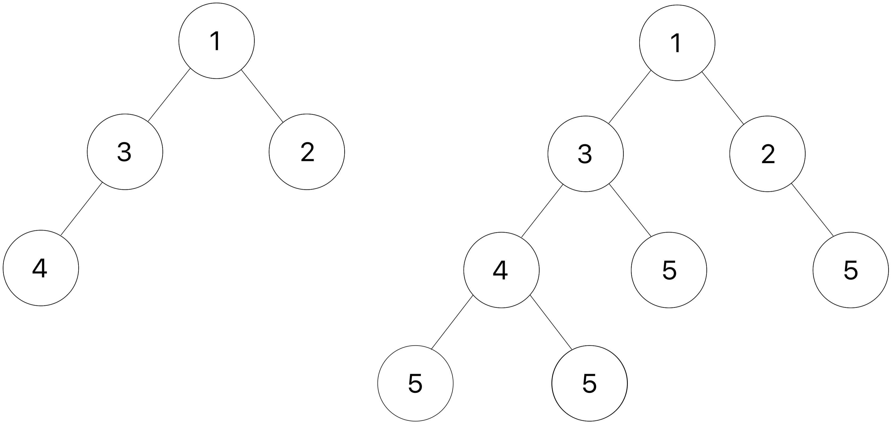

Lab 8: Midterm Review
Due by 11:59pm on Wednesday, March 16.
Starter Files
Download lab08.zip. Inside the archive, you will find starter files for the questions in this lab, along with a copy of the Ok autograder.
Topics
Consult this section if you need a refresher on the material for this lab. It's okay to skip directly to the questions and refer back here should you get stuck.
Iterators
An iterable is any object that can be iterated through, or gone through one element at a time. One construct that we've used to iterate through an iterable is a for loop:
for elem in iterable:
# do somethingfor loops work on any object that is iterable. We previously described it
as working with any sequence -- all sequences are iterable, but there are other
objects that are also iterable! We define an iterable as an object on which
calling the built-in iter function returns an iterator. An
iterator is another type of object that allows us to iterate through an
iterable by keeping track of which element is next in the sequence.
To illustrate this, consider the following block of code, which does the exact
same thing as the for statement above:
iterator = iter(iterable)
try:
while True:
elem = next(iterator)
# do something
except StopIteration:
passHere's a breakdown of what's happening:
- First, the built-in
iterfunction is called on the iterable to create a corresponding iterator. - To get the next element in the sequence, the built-in
nextfunction is called on this iterator. - When
nextis called but there are no elements left in the iterator, aStopIterationerror is raised. In the for loop construct, this exception is caught and execution can continue.
Calling iter on an iterable multiple times returns a new iterator each time
with distinct states (otherwise, you'd never be able to iterate through a
iterable more than once). You can also call iter on the iterator itself, which
will just return the same iterator without changing its state. However, note
that you cannot call next directly on an iterable.
Let's see the iter and next functions in action with an iterable we're
already familiar with -- a list.
>>> lst = [1, 2, 3, 4]
>>> next(lst) # Calling next on an iterable
TypeError: 'list' object is not an iterator
>>> list_iter = iter(lst) # Creates an iterator for the list
>>> list_iter
<list_iterator object ...>
>>> next(list_iter) # Calling next on an iterator
1
>>> next(list_iter) # Calling next on the same iterator
2
>>> next(iter(list_iter)) # Calling iter on an iterator returns itself
3
>>> list_iter2 = iter(lst)
>>> next(list_iter2) # Second iterator has new state
1
>>> next(list_iter) # First iterator is unaffected by second iterator
4
>>> next(list_iter) # No elements left!
StopIteration
>>> lst # Original iterable is unaffected
[1, 2, 3, 4]Since you can call iter on iterators, this tells us that that they are also
iterables! Note that while all iterators are iterables, the converse is not
true - that is, not all iterables are iterators. You can use iterators wherever
you can use iterables, but note that since iterators keep their state, they're
only good to iterate through an iterable once:
>>> list_iter = iter([4, 3, 2, 1])
>>> for e in list_iter:
... print(e)
4
3
2
1
>>> for e in list_iter:
... print(e)Analogy: An iterable is like a book (one can flip through the pages) and an iterator for a book would be a bookmark (saves the position and can locate the next page). Calling
iteron a book gives you a new bookmark independent of other bookmarks, but callingiteron a bookmark gives you the bookmark itself, without changing its position at all. Callingnexton the bookmark moves it to the next page, but does not change the pages in the book. Callingnexton the book wouldn't make sense semantically. We can also have multiple bookmarks, all independent of each other.
Iterable Uses
We know that lists are one type of built-in iterable objects. You may have also
encountered the range(start, end) function, which creates an iterable of
ascending integers from start (inclusive) to end (exclusive).
>>> for x in range(2, 6):
... print(x)
...
2
3
4
5Ranges are useful for many things, including performing some operations for a particular number of iterations or iterating through the indices of a list.
There are also some built-in functions that take in iterables and return useful results:
map(f, iterable)- Creates an iterator overf(x)forxiniterable. In some cases, computing a list of the values in this iterable will give us the same result as [func(x)forxiniterable]. However, it's important to keep in mind that iterators can potentially have infinite values because they are evaluated lazily, while lists cannot have infinite elements.filter(f, iterable)- Creates an iterator overxfor eachxiniterableiff(x)zip(iterables*)- Creates an iterator over co-indexed tuples with elements from each of theiterablesreversed(iterable)- Creates an iterator over all the elements in the input iterable in reverse orderlist(iterable)- Creates a list containing all the elements in the inputiterabletuple(iterable)- Creates a tuple containing all the elements in the inputiterablesorted(iterable)- Creates a sorted list containing all the elements in the inputiterablereduce(f, iterable)- Must be imported withfunctools. Apply function of two argumentsfcumulatively to the items ofiterable, from left to right, so as to reduce the sequence to a single value.
Generators
We can create our own custom iterators by writing a generator function, which
returns a special type of iterator called a generator. Generator functions
have yield statements within the body of the function instead of return
statements. Calling a generator function will return a generator object and
will not execute the body of the function.
For example, let's consider the following generator function:
def countdown(n):
print("Beginning countdown!")
while n >= 0:
yield n
n -= 1
print("Blastoff!")Calling countdown(k) will return a generator object that counts down from k
to 0. Since generators are iterators, we can call iter on the resulting
object, which will simply return the same object. Note that the body is not
executed at this point; nothing is printed and no numbers are outputted.
>>> c = countdown(5)
>>> c
<generator object countdown ...>
>>> c is iter(c)
TrueSo how is the counting done? Again, since generators are iterators, we call
next on them to get the next element! The first time next is called,
execution begins at the first line of the function body and continues until the
yield statement is reached. The result of evaluating the expression in the
yield statement is returned. The following interactive session continues
from the one above.
>>> next(c)
Beginning countdown!
5Unlike functions we've seen before in this course, generator functions can
remember their state. On any consecutive calls to next, execution picks up
from the line after the yield statement that was previously executed. Like
the first call to next, execution will continue until the next yield
statement is reached. Note that because of this, Beginning countdown! doesn't
get printed again.
>>> next(c)
4
>>> next(c)
3The next 3 calls to next will continue to yield consecutive descending
integers until 0. On the following call, a StopIteration error will be
raised because there are no more values to yield (i.e. the end of the function
body was reached before hitting a yield statement).
>>> next(c)
2
>>> next(c)
1
>>> next(c)
0
>>> next(c)
Blastoff!
StopIterationSeparate calls to countdown will create distinct generator objects with their
own state. Usually, generators shouldn't restart. If you'd like to reset the
sequence, create another generator object by calling the generator function
again.
>>> c1, c2 = countdown(5), countdown(5)
>>> c1 is c2
False
>>> next(c1)
5
>>> next(c2)
5Here is a summary of the above:
- A generator function has a
yieldstatement and returns a generator object. - Calling the
iterfunction on a generator object returns the same object without modifying its current state. - The body of a generator function is not evaluated until
nextis called on a resulting generator object. Calling thenextfunction on a generator object computes and returns the next object in its sequence. If the sequence is exhausted,StopIterationis raised. A generator "remembers" its state for the next
nextcall. Therefore,the first
nextcall works like this:- Enter the function and run until the line with
yield. - Return the value in the
yieldstatement, but remember the state of the function for futurenextcalls.
- Enter the function and run until the line with
And subsequent
nextcalls work like this:- Re-enter the function, start at the line after the
yieldstatement that was previously executed, and run until the nextyieldstatement. - Return the value in the
yieldstatement, but remember the state of the function for futurenextcalls.
- Re-enter the function, start at the line after the
- Calling a generator function returns a brand new generator object (like
calling
iteron an iterable object). - A generator should not restart unless it's defined that way. To start over from the first element in a generator, just call the generator function again to create a new generator.
Another useful tool for generators is the yield from statement. yield from
will yield all values from an iterator or iterable.
>>> def gen_list(lst):
... yield from lst
...
>>> g = gen_list([1, 2, 3, 4])
>>> next(g)
1
>>> next(g)
2
>>> next(g)
3
>>> next(g)
4
>>> next(g)
StopIterationRequired Questions
Iterators & Generators
Q1: Repeated
Implement repeated,
which takes in an iterator t and returns the first value in t
that appears k times in a row.
Note: You can assume that the iterator
twill have a value that appears at leastktimes in a row. If you are receiving aStopIteration, yourrepeatedfunction is likely not identifying the correct value.
Your implementation should iterate through the items in a way such that
if the same iterator is passed into repeated twice,
it should continue in the second call at the point it left off in the first.
An example of this behavior is in the doctests.
def repeated(t, k):
"""Return the first value in iterator T that appears K times in a row.
Iterate through the items such that if the same iterator is passed into
the function twice, it continues in the second call at the point it left
off in the first.
>>> s = iter([10, 9, 10, 9, 9, 10, 8, 8, 8, 7])
>>> repeated(s, 2)
9
>>> s2 = iter([10, 9, 10, 9, 9, 10, 8, 8, 8, 7])
>>> repeated(s2, 3)
8
>>> s = iter([3, 2, 2, 2, 1, 2, 1, 4, 4, 5, 5, 5])
>>> repeated(s, 3)
2
>>> repeated(s, 3)
5
>>> s2 = iter([4, 1, 6, 6, 7, 7, 8, 8, 2, 2, 2, 5])
>>> repeated(s2, 3)
2
"""
assert k > 1
"*** YOUR CODE HERE ***"
Use Ok to test your code:
python3 ok -q repeatedQ2: Merge
Implement merge(incr_a, incr_b), which takes two iterables incr_a and incr_b whose
elements are ordered. merge yields elements from incr_a and incr_b in sorted
order, eliminating repetition. You may assume incr_a and incr_b themselves do not
contain repeats, and that none of the elements of either are None.
You may not assume that the iterables are finite; either may produce an infinite
stream of results.
You will probably find it helpful to use the two-argument version of the built-in
next function: next(incr, v) is the same as next(incr), except that instead of
raising StopIteration when incr runs out of elements, it returns v.
See the doctest for examples of behavior.
def merge(incr_a, incr_b):
"""Yield the elements of strictly increasing iterables incr_a and incr_b, removing
repeats. Assume that incr_a and incr_b have no repeats. incr_a or incr_b may or may not
be infinite sequences.
>>> m = merge([0, 2, 4, 6, 8, 10, 12, 14], [0, 3, 6, 9, 12, 15])
>>> type(m)
<class 'generator'>
>>> list(m)
[0, 2, 3, 4, 6, 8, 9, 10, 12, 14, 15]
>>> def big(n):
... k = 0
... while True: yield k; k += n
>>> m = merge(big(2), big(3))
>>> [next(m) for _ in range(11)]
[0, 2, 3, 4, 6, 8, 9, 10, 12, 14, 15]
"""
iter_a, iter_b = iter(incr_a), iter(incr_b)
next_a, next_b = next(iter_a, None), next(iter_b, None)
"*** YOUR CODE HERE ***"
Use Ok to test your code:
python3 ok -q mergeLinked Lists & Trees
Q3: Deep Linked List Length
A linked list that contains one or more linked lists as elements is called a
deep linked list. Write a function deep_len that takes in a (possibly deep)
linked list and returns the deep length of that linked list. The deep length of
a linked list is the total number of non-link elements in the list, as well as the
total number of elements contained in all contained lists. See the function's doctests
for examples of the deep length of linked lists.
Hint: Use
isinstanceto check if something is an instance of an object.
def deep_len(lnk):
""" Returns the deep length of a possibly deep linked list.
>>> deep_len(Link(1, Link(2, Link(3))))
3
>>> deep_len(Link(Link(1, Link(2)), Link(3, Link(4))))
4
>>> levels = Link(Link(Link(1, Link(2)), \
Link(3)), Link(Link(4), Link(5)))
>>> print(levels)
<<<1 2> 3> <4> 5>
>>> deep_len(levels)
5
"""
if ______________:
return 0
elif ______________:
return 1
else:
return _________________________
Use Ok to test your code:
python3 ok -q deep_lenQ4: Add Leaves
Implement add_d_leaves, a function that takes in a Tree instance t and a number v.
We define the depth of a node in t to be the number of edges from the root to that node. The depth of root is therefore 0.
For each node in the tree, you should add d leaves to it, where d is the depth of the node. Every added leaf should have a label of v. If the node at this depth has existing branches, you should add these leaves to the end of that list of branches.
For example, you should be adding 1 leaf with label v to each node at depth 1, 2 leaves to each node at depth 2, and so on.
Here is an example of a tree t(shown on the left) and the result after add_d_leaves is applied with v as 5.

Try drawing out the second doctest to visualize how the function is mutating
t3.
Hint: Use a helper function to keep track of the depth!
def add_d_leaves(t, v):
"""Add d leaves containing v to each node at every depth d.
>>> t_one_to_four = Tree(1, [Tree(2), Tree(3, [Tree(4)])])
>>> print(t_one_to_four)
1
2
3
4
>>> add_d_leaves(t_one_to_four, 5)
>>> print(t_one_to_four)
1
2
5
3
4
5
5
5
>>> t1 = Tree(1, [Tree(3)])
>>> add_d_leaves(t1, 4)
>>> t1
Tree(1, [Tree(3, [Tree(4)])])
>>> t2 = Tree(2, [Tree(5), Tree(6)])
>>> t3 = Tree(3, [t1, Tree(0), t2])
>>> print(t3)
3
1
3
4
0
2
5
6
>>> add_d_leaves(t3, 10)
>>> print(t3)
3
1
3
4
10
10
10
10
10
10
0
10
2
5
10
10
6
10
10
10
"""
"*** YOUR CODE HERE ***"
Use Ok to test your code:
python3 ok -q add_d_leavesEfficiency
Q5: Efficiency Practice
Choose the term that fills in the blank for the functions defined below:
<function> runs in ____ time in the length of its input.
- Constant
- Logarithmic
- Linear
- Quadratic
- Exponential
- None of these
Assume that len runs in constant time
and all runs in linear time in the length of its input.
Selecting an element of a list by its index requires constant time.
Constructing a range requires constant time.
def count_partitions(n, m):
"""Counts the number of partitions of a positive integer n,
using parts up to size m."""
if n == 0:
return 1
elif n < 0:
return 0
elif m == 0:
return 0
else:
with_m = count_partitions(n-m, m)
without_m = count_partitions(n, m-1)
return with_m + without_m
def is_palindrome(s):
"""Return whether a list of numbers s is a palindrome."""
return all([s[i] == s[len(s) - i - 1] for i in range(len(s))])
def binary_search(lst, n):
"""Takes in a sorted list lst and returns the index where integer n
is contained in lst. Returns -1 if n does not exist in lst."""
low = 0
high = len(lst)
while low <= high:
middle = (low + high) // 2
if lst[middle] == n:
return middle
elif n < lst[middle]:
high = middle - 1
else:
low = middle + 1
return -1The
is_palindromequestion was reformatted from question 6(d) on fall 2019's final.
Use Ok to test your understanding:
python3 ok -q efficiency_practice -uSubmit
Make sure to submit this assignment by running:
python3 ok --submitExtra Practice
Recursion and Tree Recursion
Q6: Subsequences
A subsequence of a sequence S is a subset of elements from S, in the same
order they appear in S. Consider the list [1, 2, 3]. Here are a few of it's
subsequences [], [1, 3], [2], and [1, 2, 3].
Write a function that takes in a list and returns all possible subsequences of that list. The subsequences should be returned as a list of lists, where each nested list is a subsequence of the original input.
In order to accomplish this, you might first want to write a function insert_into_all
that takes an item and a list of lists, adds the item to the beginning of each nested list,
and returns the resulting list.
def insert_into_all(item, nested_list):
"""Return a new list consisting of all the lists in nested_list,
but with item added to the front of each. You can assume that
nested_list is a list of lists.
>>> nl = [[], [1, 2], [3]]
>>> insert_into_all(0, nl)
[[0], [0, 1, 2], [0, 3]]
"""
"*** YOUR CODE HERE ***"
def subseqs(s):
"""Return a nested list (a list of lists) of all subsequences of S.
The subsequences can appear in any order. You can assume S is a list.
>>> seqs = subseqs([1, 2, 3])
>>> sorted(seqs)
[[], [1], [1, 2], [1, 2, 3], [1, 3], [2], [2, 3], [3]]
>>> subseqs([])
[[]]
"""
if ________________:
________________
else:
________________
________________
Use Ok to test your code:
python3 ok -q subseqsQ7: Non-Decreasing Subsequences
Just like the last question, we want to write a function that takes a list and returns a list of lists, where each individual list is a subsequence of the original input.
This time we have another condition: we only want the subsequences for which
consecutive elements are nondecreasing. For example, [1, 3, 2] is a
subsequence of [1, 3, 2, 4], but since 2 < 3, this subsequence would not
be included in our result.
Fill in the blanks to complete the implementation of the non_decrease_subseqs
function. You may assume that the input list contains no negative elements.
You may use the provided helper function insert_into_all, which takes in an
item and a list of lists and inserts the item to the front of each list.
def non_decrease_subseqs(s):
"""Assuming that S is a list, return a nested list of all subsequences
of S (a list of lists) for which the elements of the subsequence
are strictly nondecreasing. The subsequences can appear in any order.
>>> seqs = non_decrease_subseqs([1, 3, 2])
>>> sorted(seqs)
[[], [1], [1, 2], [1, 3], [2], [3]]
>>> non_decrease_subseqs([])
[[]]
>>> seqs2 = non_decrease_subseqs([1, 1, 2])
>>> sorted(seqs2)
[[], [1], [1], [1, 1], [1, 1, 2], [1, 2], [1, 2], [2]]
"""
def subseq_helper(s, prev):
if not s:
return ____________________
elif s[0] < prev:
return ____________________
else:
a = ______________________
b = ______________________
return insert_into_all(________, ______________) + ________________
return subseq_helper(____, ____)
Use Ok to test your code:
python3 ok -q non_decrease_subseqsMutable Lists
Q8: Shuffle
Define a function shuffle that takes a sequence with an even number of
elements (cards) and creates a new list that interleaves the elements
of the first half with the elements of the second half.
To interleave two sequences s0 and s1 is to create a new sequence such that the new sequence contains (in this order) the first element of s0, the first element of s1, the second element of s0, the second element of s1, and so on. If the two lists are not the same length, then the leftover elements of the longer list should still appear at the end.
Note: If you're running into an issue where the special heart / diamond / spades / clubs symbols are erroring in the doctests, feel free to copy paste the below doctests into your file as these don't use the special characters and should not give an "illegal multibyte sequence" error.
def card(n):
"""Return the playing card numeral as a string for a positive n <= 13."""
assert type(n) == int and n > 0 and n <= 13, "Bad card n"
specials = {1: 'A', 11: 'J', 12: 'Q', 13: 'K'}
return specials.get(n, str(n))
def shuffle(cards):
"""Return a shuffled list that interleaves the two halves of cards.
>>> shuffle(range(6))
[0, 3, 1, 4, 2, 5]
>>> suits = ['H', 'D', 'S', 'C']
>>> cards = [card(n) + suit for n in range(1,14) for suit in suits]
>>> cards[:12]
['AH', 'AD', 'AS', 'AC', '2H', '2D', '2S', '2C', '3H', '3D', '3S', '3C']
>>> cards[26:30]
['7S', '7C', '8H', '8D']
>>> shuffle(cards)[:12]
['AH', '7S', 'AD', '7C', 'AS', '8H', 'AC', '8D', '2H', '8S', '2D', '8C']
>>> shuffle(shuffle(cards))[:12]
['AH', '4D', '7S', '10C', 'AD', '4S', '7C', 'JH', 'AS', '4C', '8H', 'JD']
>>> cards[:12] # Should not be changed
['AH', 'AD', 'AS', 'AC', '2H', '2D', '2S', '2C', '3H', '3D', '3S', '3C']
"""
assert len(cards) % 2 == 0, 'len(cards) must be even'
half = _______________
shuffled = []
for i in _____________:
_________________
_________________
return shuffledUse Ok to test your code:
python3 ok -q shuffleGenerators & Iterators
Q9: Pairs (generator)
Write a generator function pairs that takes a list and yields all the
possible pairs of elements from that list.
def pairs(lst):
"""
>>> type(pairs([3, 4, 5]))
<class 'generator'>
>>> for x, y in pairs([3, 4, 5]):
... print(x, y)
...
3 3
3 4
3 5
4 3
4 4
4 5
5 3
5 4
5 5
"""
"*** YOUR CODE HERE ***"
Use Ok to test your code:
python3 ok -q pairsQ10: Pairs (iterator)
Important note (March 14): This question is not in scope for this semester (Spring 2022), as it involves
__iter__and__next__.
Now write an iterator that does the same thing. You are only allowed to use a linear amount of space - so computing a list of all of the possible pairs is not a valid answer. Notice how much harder it is - this is why generators are useful.
class PairsIterator:
"""
>>> for x, y in PairsIterator([3, 4, 5]):
... print(x, y)
...
3 3
3 4
3 5
4 3
4 4
4 5
5 3
5 4
5 5
"""
def __init__(self, lst):
"*** YOUR CODE HERE ***"
def __next__(self):
"*** YOUR CODE HERE ***"
def __iter__(self):
"*** YOUR CODE HERE ***"
Use Ok to test your code:
python3 ok -q PairsIteratorTrees
Q11: Long Paths
Implement long_paths, which returns a list of all paths in a tree with
length at least n. A path in a tree is a linked list of node values that
starts with the root and ends at a leaf. Each subsequent element must be from a
child of the previous value's node. The length of a path is the number of
edges in the path (i.e. one less than the number of nodes in the path).
Paths are listed in order from left to right. See the doctests for some
examples.
def long_paths(tree, n):
"""Return a list of all paths in tree with length at least n.
>>> t = Tree(3, [Tree(4), Tree(4), Tree(5)])
>>> left = Tree(1, [Tree(2), t])
>>> mid = Tree(6, [Tree(7, [Tree(8)]), Tree(9)])
>>> right = Tree(11, [Tree(12, [Tree(13, [Tree(14)])])])
>>> whole = Tree(0, [left, Tree(13), mid, right])
>>> for path in long_paths(whole, 2):
... print(path)
...
<0 1 2>
<0 1 3 4>
<0 1 3 4>
<0 1 3 5>
<0 6 7 8>
<0 6 9>
<0 11 12 13 14>
>>> for path in long_paths(whole, 3):
... print(path)
...
<0 1 3 4>
<0 1 3 4>
<0 1 3 5>
<0 6 7 8>
<0 11 12 13 14>
>>> long_paths(whole, 4)
[Link(0, Link(11, Link(12, Link(13, Link(14)))))]
"""
"*** YOUR CODE HERE ***"
Use Ok to test your code:
python3 ok -q long_pathsLinked Lists
Q12: Flip Two
Write a recursive function flip_two that takes as input a
linked list s and mutates s so that every pair of values in the linked list
is flipped.
def flip_two(s):
"""
>>> one_lnk = Link(1)
>>> flip_two(one_lnk)
>>> one_lnk
Link(1)
>>> lnk = Link(1, Link(2, Link(3, Link(4, Link(5)))))
>>> flip_two(lnk)
>>> lnk
Link(2, Link(1, Link(4, Link(3, Link(5)))))
"""
"*** YOUR CODE HERE ***"
# For an extra challenge, try writing out an iterative approach as well below!
"*** YOUR CODE HERE ***"
Use Ok to test your code:
python3 ok -q flip_two